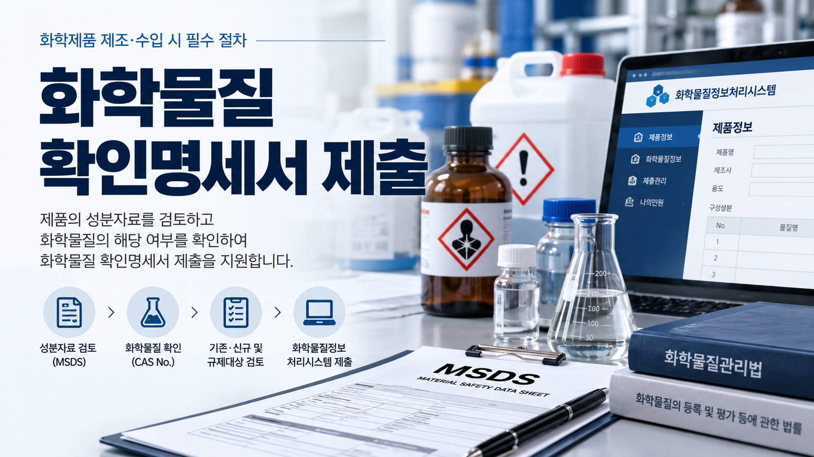
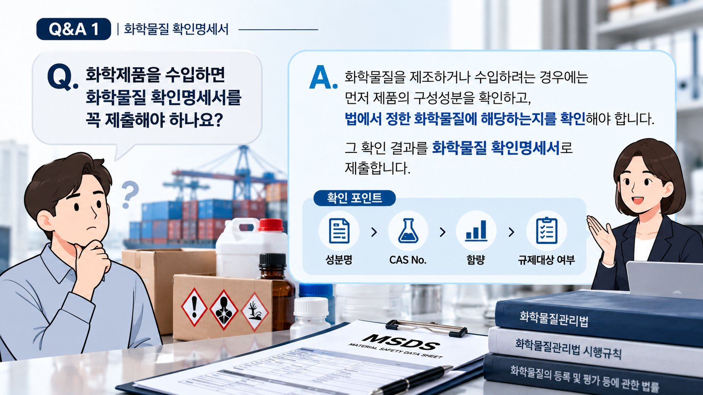
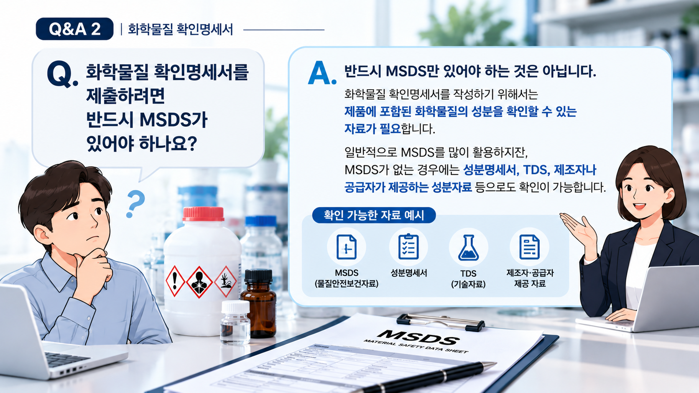
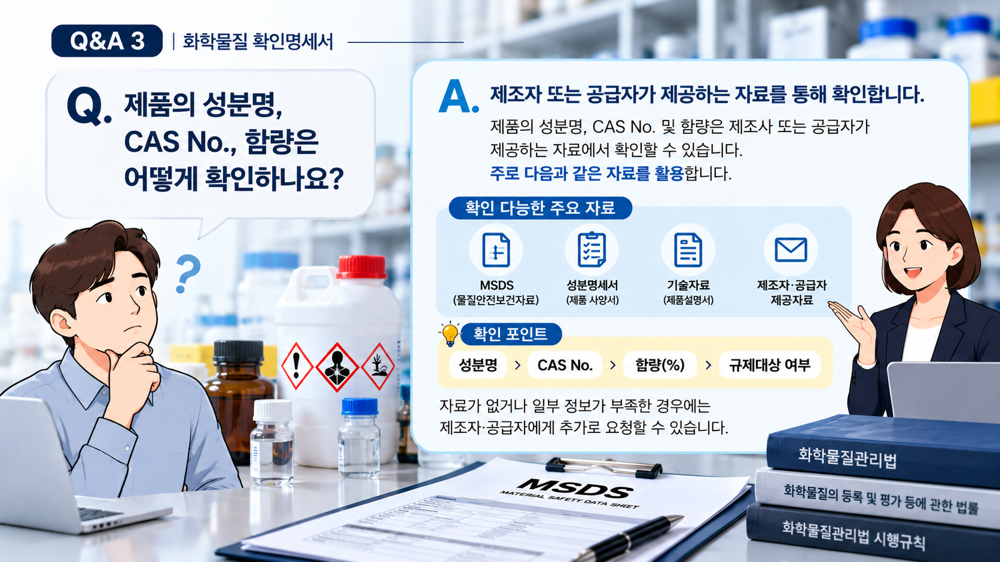

01. 화학물질 확인명세서란?
화학물질을 제조하거나 수입하려는 경우에는 해당 화학물질 또는 제품의 구성성분이 화학물질관리법에서 정한 화학물질에 해당하는지를 확인해야 합니다.
이러한 확인 결과를 제출하는 서류가 화학물질 확인명세서입니다.
따라서 제조·수입하려는 제품이 있다면 먼저 제품의 구성성분을 확인할 수 있는 자료가 준비되어 있는지 살펴보는 것이 중요합니다.
02. 어떤 경우에 확인이 필요한가요?
국내에서 화학물질을 제조하거나 해외에서 화학물질을 수입하려는 경우에는 화학물질확인 대상 여부를 검토해야 합니다.
특히 수입제품은 제품의 명칭이나 용도만으로 판단하기보다는 실제 구성성분을 확인하여 관련 의무를 검토하는 것이 중요합니다.
수입제품이라면 먼저 확인하세요.
해외에서 완제품 형태로 수입하는 경우에도 제품의 형태와 구성성분 등에 따라 화학물질확인이 필요한지 검토해야 합니다.

03. 어떤 화학물질을 확인하나요?
제품의 구성성분을 확인한 다음 각 화학물질이 법령에서 정한 화학물질에 해당하는지를 검토합니다.
| 구분 | 주요 확인내용 |
|---|---|
| 기존·신규 | 기존화학물질 또는 신규화학물질 해당 여부 |
| 인체 유해성 | 인체급성·인체만성유해성물질 해당 여부 |
| 생태 유해성 | 생태유해성물질 해당 여부 |
| 허가·제한·금지 | 허가물질·제한물질·금지물질 해당 여부 |
| 사고대비 | 사고대비물질 해당 여부 |
04. 반드시 MSDS가 있어야 하나요?
반드시 MSDS만으로 화학물질을 확인하는 것은 아닙니다. 중요한 것은 제품에 포함된 화학물질의 성분을 확인할 수 있는 자료를 확보하는 것입니다.
제품과 거래형태에 따라 다음과 같은 자료를 확인자료로 검토할 수 있습니다.
- MSDS(물질안전보건자료)
- 성분명세서 등 제품의 성분을 확인할 수 있는 자료
- 제조자·수출자 또는 공급자가 제공하는 관련 자료
- 법령에서 정한 화학물질 확인 관련 서류
※ 실제 확인에 사용할 수 있는 자료는 제품과 거래형태 및 자료의 내용에 따라 달라질 수 있습니다.

05. 성분자료에서는 무엇을 확인하나요?
확인명세서 작성의 출발점은 제품에 어떤 화학물질이 얼마나 포함되어 있는지를 확인하는 것입니다.
- 제품의 구성성분명
- CAS No. 등 화학물질 식별정보
- 각 구성성분의 함량
- 제품명과 주요 용도
- 제조자 또는 공급자가 제공한 관련 정보
성분명이나 CAS No., 함량 등의 정보가 부족하다면 제조자·수출자 또는 공급자에게 추가자료를 요청하여 확인할 필요가 있습니다.

06. 확인명세서 제출은 어떻게 진행되나요?
먼저 제조·수입하려는 제품을 확인하고, 확보한 성분자료를 토대로 구성 화학물질을 하나씩 확인합니다.
현재 화학물질확인 관련 업무는 화학물질정보처리시스템을 통해 진행할 수 있습니다.
07. 성분자료가 부족하면 어떻게 하나요?
수입제품의 경우 해외 제조자나 공급자가 제공한 자료에 일부 구성성분만 표시되어 있거나 함량정보가 충분하지 않은 경우가 있을 수 있습니다.
이때에는 확인되지 않은 부분을 임의로 추정하기보다는 제조자·수출자 또는 공급자에게 필요한 성분정보를 추가로 요청하여 확인하는 것이 중요합니다.
자료의 일치 여부도 확인하세요.
여러 자료를 함께 사용하는 경우에는 제품명, 구성성분명, CAS No., 함량 등의 정보가 서로 일치하는지도 살펴보는 것이 좋습니다.
08. 제출 전에 특히 주의할 점
- 제품명이나 용도만으로 화학물질 해당 여부를 판단하지 않는 것이 좋습니다.
- 구성성분의 정확한 물질명과 CAS No. 및 함량정보를 확인하는 것이 중요합니다.
- MSDS에 필요한 성분정보가 모두 표시되어 있는지 확인해야 합니다.
- 자료가 부족한 경우 임의로 판단하기보다 제조자·수출자 또는 공급자에게 추가자료를 요청하는 것이 좋습니다.
- 구성성분별로 관련 화학물질의 해당 여부를 확인해야 합니다.
- 제품이나 성분이 변경된 경우에는 기존에 확인한 내용을 그대로 사용할 수 있는지 다시 검토하는 것이 좋습니다.
화학물질 확인명세서 제출을 준비하고 계신가요?
제조·수입하려는 제품과 현재 보유하고 있는 성분자료를 기준으로 추가로 확인해야 할 사항을 먼저 점검해 보세요.